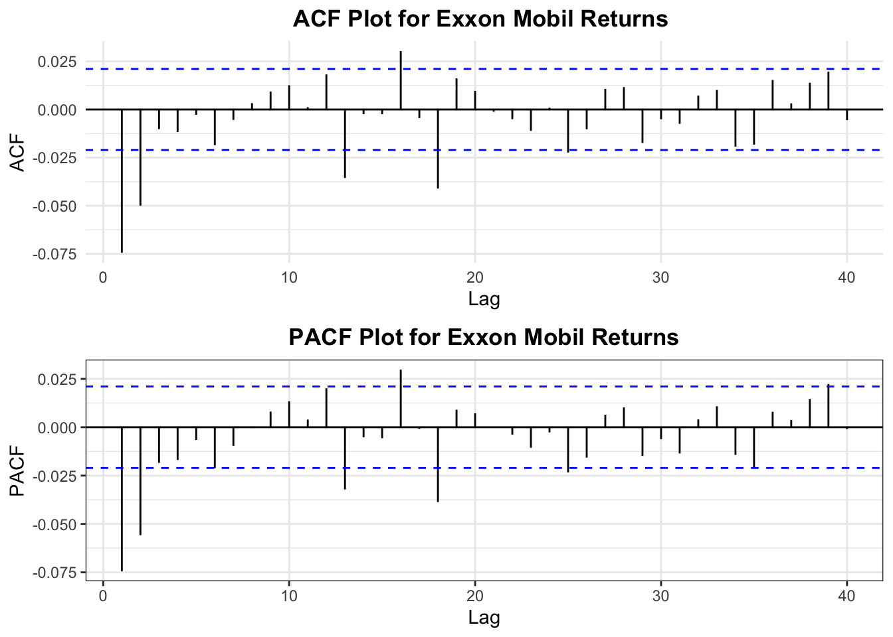
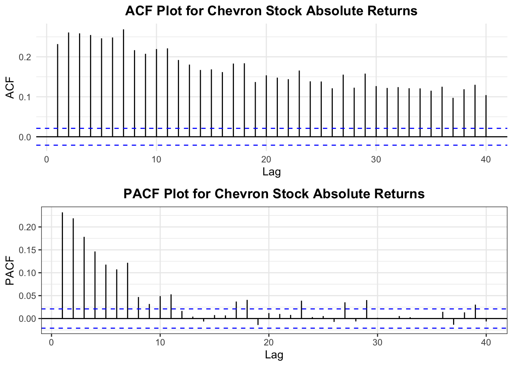

Code
# Plot the stock prices
chartSeries(Exxon_stockprice, theme = chartTheme("white"),
bar.type = "hlc",
up.col = "green",
dn.col = "red") 
In this section of our project, we will analyze financial time series data related to key players in the energy market, specifically Exxon Mobil Corporation (XOM) and Chevron Corporation (CVX). These companies, pivotal in the global energy landscape, not only reflect the economic pulses of the oil industry but also provide insights into how shifts in energy policies and market dynamics influence significant economic indicators.
Exxon Mobil, a titan in the oil industry, has been at the forefront of energy production and innovation. The company’s activities span across the extraction, refining, and distribution of energy products, positioning it as a critical barometer for assessing the economic health and trends within the energy sector. By examining the financial time series of Exxon Mobil’s stock prices, we aim to capture the volatility and market sentiment that underpin the broader economic implications of shifts in oil prices and energy policies.
Similarly, Chevron, as a major competitor and another influential player in the oil market, offers a complementary perspective to the economic analysis of the energy sector. Chevron’s extensive operations in energy production and its strategic responses to global energy demands make its financial performance a valuable indicator of the sector’s economic stability and growth. The analysis of Chevron’s stock price volatility will help us understand how energy market fluctuations and transitions toward renewable resources impact major energy corporations.
To conduct the time series analysis of financial data from Exxon Mobil and Chevron, we will utilize ARCH (Autoregressive Conditional Heteroskedasticity) and GARCH (Generalized Autoregressive Conditional Heteroskedasticity) models. These models are particularly effective for financial market data as they adeptly handle the inherent volatility typical of stock return data. By examining the volatility patterns in the stock prices of XOM and CVX, we aim to glean insights into how market dynamics, driven by both traditional and renewable energy sources, are shaping the economic narratives of these leading corporations.
In this detailed exploration, our objective is to uncover how historical and present economic conditions, policy shifts, and global energy crises influence the financial trajectories of key energy players. These insights will not only deepen our understanding of the energy sector’s impact on global economics but also aid in formulating strategies for a sustainable energy future.
To visually analyze the stock price trends of Exxon Mobil and Chevron Corporation, we will employ the quantmod package to fetch and plot the data.
Graphical representations provide intuitive insights into the financial performance over time, highlighting trends, volatilities, and anomalies that might not be immediately apparent from raw data
# Plot the stock prices
chartSeries(Exxon_stockprice, theme = chartTheme("white"),
bar.type = "hlc",
up.col = "green",
dn.col = "red")
The chart shows the stock price movement for Exxon Mobil Corporation from January 1990 to April 2024. The data, represented through a high-low-close (HLC) bar chart, shows trajectory of prices over more than three decades. A general uptrend can be observed in the late ’90s, followed by increased volatility and several peaks and dips that suggest fluctuating market conditions through the 2000s and 2010s. The trading volume, in the histogram below the main price chart, offers a narrative on market sentiment, with spikes in volume associated with changes in the industry.
# Plot the stock prices
chartSeries(Chevron_stockprice, theme = chartTheme("white"),
bar.type = "hlc",
up.col = "green",
dn.col = "red") 
The chart displays Chevron Corporation’s stock prices from 1990 to April 2024, capturing significant ups and downs that reflect key changes in the energy industry and wider economic trends. The green and red bars indicates when prices went up or down each day. After a clear rise in prices until the late ’90s, the stock experiences noticeable volatility, swinging up and down.
The histogram below the chart, which tracks trading volume, aligns with notable shifts in stock prices, suggesting times when investors were particularly active. This visualization lays the groundwork for a detailed examination of price volatility using ARCH/GARCH models, offering a visual summary of the market forces that have influenced Chevron’s stock over the years.
Now, we will move forward to fit an ARCH/GARCH model to the stock price data. The first step in this process is to prepare the time series by calculating the stock price returns, which are typically used in financial time series modeling because they are more likely to exhibit stationary properties—a key requirement for ARCH/GARCH models.
# Convert to a time series object
Exxon_ts <- ts(Exxon_stockprice$XOM.Adjusted, start=decimal_date(as.Date("1990-01-01")), frequency = 365.25)
# Calculate log returns
returns_exxon <- log(Exxon_ts)%>% diff()
knitr::kable(summary(returns_exxon))| XOM.Adjusted | |
|---|---|
| Min. :-0.1502715 | |
| 1st Qu.:-0.0076625 | |
| Median : 0.0001236 | |
| Mean : 0.0003926 | |
| 3rd Qu.: 0.0085811 | |
| Max. : 0.1586308 |
From the summary statistics, we can clearly see that the mean return is close to zero, but with significant deviation. This is characteristic of financial data, where over long periods, the mean return tends to be small. This behavior of returns—small and steady on average, with occasional bursts of high variation—is precisely what ARCH/GARCH models aim to capture and quantify.
# Plot the returns
autoplot(returns_exxon, color="dodgerblue3") +
theme_minimal() +
ggtitle("Exxon Mobil Stock Price Returns") +
theme(plot.title = element_text(hjust = 0.5, face = "bold"))
The plot shows the daily returns on Exxon Mobil’s stock from 1990 to 2024. The returns, calculated using logarithmic differences, fluctuate around zero, with spikes that indicate days of particularly high volatility. The distribution of returns is fairly symmetric, there is volatility clustering in the returns.
# Convert to a time series object
Chevron_ts <- ts(Chevron_stockprice$CVX.Adjusted, start=decimal_date(as.Date("1990-01-01")), frequency = 365.25)
# Calculate log returns
returns_chevron <- log(Chevron_ts)%>% diff()
knitr::kable(summary(returns_chevron))| CVX.Adjusted | |
|---|---|
| Min. :-0.2500622 | |
| 1st Qu.:-0.0079805 | |
| Median : 0.0004278 | |
| Mean : 0.0004088 | |
| 3rd Qu.: 0.0089683 | |
| Max. : 0.2049039 |
The summary statistics for Chevron’s returns highlight a median value slightly above zero, suggesting that half of the observed returns were positive over the long term. However, the minimum and maximum values point to significant swings in the stock’s performance.
# Plot the returns
autoplot(returns_chevron, color="dodgerblue3") +
theme_minimal() +
ggtitle("Chevron Stock Price Returns") +
theme(plot.title = element_text(hjust = 0.5, face = "bold"))
The plotted returns of Chevron’s stock, similar to Exxon Mobil’s, show clusters of volatility. These clusters where the spikes are denser indicate periods of heightened uncertainty or market activity. This pattern is a key feature that the forthcoming ARCH/GARCH analysis will aim to capture.
To further investigate the nature of the stock price returns and prepare for ARCH/GARCH modeling, it’s essential to look at the autocorrelations.
Autocorrelation Function (ACF) and Partial Autocorrelation Function (PACF) plots help us identify whether returns are influenced by their own past values (autocorrelation) and to what extent (partial autocorrelation). This step is key in determining the appropriate lag order for the ARCH/GARCH models.
#ACF Plot for Exxon Mobil Stock
Exxon_acf <- ggAcf(returns_exxon,40) +
ggtitle("ACF Plot for Exxon Mobil Returns ") +
theme_minimal() +
theme(plot.title = element_text(hjust = 0.5, face = "bold"))
#PACF Plot for Exxon Mobil Stock
Exxon_pacf <- ggPacf(returns_exxon,40) +
ggtitle("PACF Plot for Exxon Mobil Returns") +
theme_bw() +
theme(plot.title = element_text(hjust = 0.5, face = "bold"))
grid.arrange(Exxon_acf, Exxon_pacf, nrow = 2)
Upon examining the ACF and PACF plots we can see values quickly drop off and mostly lie within the significance bounds, the returns appear to be stationary. Possible q and p values would be q = 0, 1, 2 and p = 0, 1, 2
#ACF Plot for Chevron Stock
Chevron_acf <- ggAcf(returns_chevron,40) +
ggtitle("ACF Plot for Chevron Stock Returns") +
theme_minimal() +
theme(plot.title = element_text(hjust = 0.5, face = "bold"))
#PACF Plot for Chevron Stock
Chevron_pacf <- ggPacf(returns_chevron,40) +
ggtitle("PACF Plot for Chevron Stock Returns") +
theme_bw() +
theme(plot.title = element_text(hjust = 0.5, face = "bold"))
grid.arrange(Chevron_acf, Chevron_pacf, nrow = 2)
Upon examining the ACF and PACF plots we can see values quickly drop off and mostly lie within the significance bounds, the returns appear to be stationary. Possible q and p values would be q = 0, 1 and p = 0, 1
The ACF and PACF plots for the absolute returns give us insights into the nature of volatility in the stock’s returns. When we analyze absolute returns, we’re focusing on the magnitude of changes, regardless of direction, which can often reveal volatility patterns.
#ACF Plot for Exxon Mobil Stock
Exxon_acf_abs <- ggAcf(abs(returns_exxon),lag.max=40) +
ggtitle("ACF Plot for Exxon Mobil Absolute Returns") +
theme_minimal() +
theme(plot.title = element_text(hjust = 0.5, face = "bold"))
#PACF Plot for Exxon Mobil Stock
Exxon_pacf_abs <- ggPacf(abs(returns_exxon),lag.max=40) +
ggtitle("PACF Plot for Exxon Mobil Absolute Returns") +
theme_bw() +
theme(plot.title = element_text(hjust = 0.5, face = "bold"))
grid.arrange(Exxon_acf_abs, Exxon_pacf_abs, nrow = 2)The ACF plot for the absolute returns shows significant autocorrelation across several lags, this indicates persistent volatility in the stock price returns. This is also indicative of the volatility clustering seen in financial time series.
The PACF plot shows significant correlations at the early lags (from 1 to 11, then at 17 and 18). After these initial lags, the correlations in the PACF plot decrease and generally stay within the confidence interval
#ACF Plot for Chevron Stock
Chevron_acf_abs <- ggAcf(abs(returns_chevron),40) +
ggtitle("ACF Plot for Chevron Stock Absolute Returns") +
theme_minimal() +
theme(plot.title = element_text(hjust = 0.5, face = "bold"))
#PACF Plot for Chevron Stock
Chevron_pacf_abs <- ggPacf(abs(returns_chevron),40) +
ggtitle("PACF Plot for Chevron Stock Absolute Returns") +
theme_bw() +
theme(plot.title = element_text(hjust = 0.5, face = "bold"))
grid.arrange(Chevron_acf_abs, Chevron_pacf_abs, nrow = 2)
Examining squared returns is a technique in time series analysis to assess volatility patterns. When returns are squared, patterns in volatility might become more evident, as periods of high volatility will result in higher squared returns. These patterns are crucial for ARCH/GARCH models.
# ACF Plot for Exxon Mobil Squared Returns
Exxon_acf_se <- ggAcf(returns_exxon^2, lag.max=40) +
ggtitle("ACF Plot for Exxon Mobil Squared Returns") +
theme_minimal() +
theme(plot.title = element_text(hjust = 0.5, face = "bold"))
# PACF Plot for Exxon Mobil Squared Returns
Exxon_pacf_se <- ggPacf(returns_exxon^2, lag.max=40) +
ggtitle("PACF Plot for Exxon Mobil Squared Returns") +
theme_bw() +
theme(plot.title = element_text(hjust = 0.5, face = "bold"))
# Arrange the plots on a grid
grid.arrange(Exxon_acf_se, Exxon_pacf_se, nrow = 2)
The ACF plot for squared returns shows a much slower decay, indicating that volatility shocks have a long-lasting effect. The ACF plot here suggests that volatility shocks to Exxon Mobil’s stock prices are persistent, with a high level of autocorrelation extending across many lags.
The PACF plot for squared returns, while also showing some significant lags, doesn’t carry the same pattern of persistence as the ACF.
This persistence of volatility as indicated by the squared returns ACF and PACF plots reinforces the need for a GARCH model in capturing the time-varying volatility in the stock returns
#ACF Plot for Chevron Stock
Chevron_acf_se <- ggAcf(returns_chevron^2,40) +
ggtitle("ACF Plot for Chevron Stock Squared Returns") +
theme_minimal() +
theme(plot.title = element_text(hjust = 0.5, face = "bold"))
#PACF Plot for Chevron Stock
Chevron_pacf_se <- ggPacf(returns_chevron^2,40) +
ggtitle("PACF Plot for Chevron Stock Squared Returns") +
theme_bw() +
theme(plot.title = element_text(hjust = 0.5, face = "bold"))
grid.arrange(Chevron_acf_se, Chevron_pacf_se, nrow = 2)
Before fitting an ARCH or GARCH model, it is important to formally test for the presence of ARCH effects that is, to test whether there are autoregressive conditional heteroskedasticity features in the time series data.
# Conduct the ARCH test
ArchTest(returns_exxon, lags=1, demean=TRUE)
ARCH LM-test; Null hypothesis: no ARCH effects
data: returns_exxon
Chi-squared = 590.35, df = 1, p-value < 2.2e-16The result of the ARCH test indicates a Chi-squared statistic of 590.35 with 1 degree of freedom and a p-value less than 2.2e-16, which is extremely low. This leads us to reject the null hypothesis of no ARCH effects. There is very strong evidence of autoregressive conditional heteroskedasticity in the Exxon Mobil stock returns.
Given these results, it is appropriate to proceed with fitting an ARCH/GARCH model to Exxon Mobil’s stock returns to better understand and predict the volatility patterns.
ArchTest(returns_chevron, lags=1, demean=TRUE)
ARCH LM-test; Null hypothesis: no ARCH effects
data: returns_chevron
Chi-squared = 260.57, df = 1, p-value < 2.2e-16When volatility clustering is present, as indicated by the ARCH test, it’s good practice to first model the mean of the time series. An ARIMA model helps in capturing the autocorrelation in the mean of the series. Once we’ve accounted for any autocorrelation in the mean with the ARIMA model, we can proceed to model the conditional variance (volatility) using GARCH models.
To find the best ARIMA model, we search across different combinations of p (autoregressive terms), d (differencing terms), and q (moving average terms), and select the model with the lowest information criteria (AIC, BIC, and AICc).
ARIMA.c=function(p1,p2,q1,q2,data){
temp=c()
#d=1
i=1
temp= data.frame()
ls=matrix(rep(NA,6*18),nrow=18)
for (p in p1:p2)
{
for(q in q1:q2)
{
for(d in 0:1)
{
if(p+d+q<=6)
{
model<- Arima(data,order=c(p,d,q))
ls[i,]= c(p,d,q,model$aic,model$bic,model$aicc)
i=i+1
}
}
}
}
temp= as.data.frame(ls)
names(temp)= c("p","d","q","AIC","BIC","AICc")
temp
}
output <- ARIMA.c(0,2,0,2,data=returns_exxon)
output p d q AIC BIC AICc
1 0 0 0 -47296.18 -47282.05 -47296.18
2 0 1 0 -40683.01 -40675.95 -40683.01
3 0 0 1 -47347.75 -47326.56 -47347.75
4 0 1 1 -47280.64 -47266.51 -47280.64
5 0 0 2 -47370.17 -47341.91 -47370.16
6 0 1 2 -47332.04 -47310.84 -47332.04
7 1 0 0 -47341.95 -47320.75 -47341.95
8 1 1 0 -43299.59 -43285.46 -43299.59
9 1 0 1 -47373.03 -47344.77 -47373.03
10 1 1 1 -47326.26 -47305.07 -47326.26
11 1 0 2 -47371.46 -47336.13 -47371.45
12 1 1 2 -47356.93 -47328.67 -47356.92
13 2 0 0 -47366.91 -47338.65 -47366.90
14 2 1 0 -44522.54 -44501.35 -44522.54
15 2 0 1 -47371.37 -47336.05 -47371.36
16 2 1 1 -47351.11 -47322.85 -47351.11
17 2 0 2 -47370.15 -47327.76 -47370.14
18 2 1 2 -47355.50 -47320.17 -47355.49output[which.min(output$AIC),] p d q AIC BIC AICc
9 1 0 1 -47373.03 -47344.77 -47373.03output[which.min(output$BIC),] p d q AIC BIC AICc
9 1 0 1 -47373.03 -47344.77 -47373.03output[which.min(output$AICc),] p d q AIC BIC AICc
9 1 0 1 -47373.03 -47344.77 -47373.03The best ARIMA model according to the lowest AIC, BIC and AICC is ARIMA(1,0,1)
fit_exxon <- Arima(returns_exxon,order=c(1,0,1))
summary(fit_exxon)Series: returns_exxon
ARIMA(1,0,1) with non-zero mean
Coefficients:
ar1 ma1 mean
0.5315 -0.6136 4e-04
s.e. 0.0723 0.0673 1e-04
sigma^2 = 0.000244: log likelihood = 23690.52
AIC=-47373.03 AICc=-47373.03 BIC=-47344.77
Training set error measures:
ME RMSE MAE MPE MAPE MASE ACF1
Training set -2.384065e-06 0.01561831 0.01100162 NaN Inf 0.6700628 0.001893208The standard errors are relatively small compared to the coefficients, suggesting that the coefficients are likely to be significantly different from zero.
ARIMA.c=function(p1,p2,q1,q2,data){
temp=c()
d=1
i=1
temp= data.frame()
ls=matrix(rep(NA,6*18),nrow=18)
for (p in p1:p2)
{
for(q in q1:q2)
{
for(d in 0:1)
{
if(p+d+q<=6)
{
model<- Arima(data,order=c(p,d,q))
ls[i,]= c(p,d,q,model$aic,model$bic,model$aicc)
i=i+1
}
}
}
}
temp= as.data.frame(ls)
names(temp)= c("p","d","q","AIC","BIC","AICc")
temp
}
output <- ARIMA.c(0,2,0,2,data=returns_chevron)
output p d q AIC BIC AICc
1 0 0 0 -46406.59 -46392.46 -46406.59
2 0 1 0 -39788.46 -39781.40 -39788.46
3 0 0 1 -46454.39 -46433.19 -46454.38
4 0 1 1 -46391.15 -46377.03 -46391.15
5 0 0 2 -46453.61 -46425.35 -46453.60
6 0 1 2 -46438.72 -46417.53 -46438.72
7 1 0 0 -46452.96 -46431.76 -46452.95
8 1 1 0 -42629.60 -42615.47 -42629.59
9 1 0 1 -46453.75 -46425.49 -46453.74
10 1 1 1 -46437.37 -46416.18 -46437.37
11 1 0 2 -46451.60 -46416.28 -46451.59
12 1 1 2 -46438.04 -46409.78 -46438.03
13 2 0 0 -46453.49 -46425.23 -46453.49
14 2 1 0 -43806.11 -43784.91 -43806.10
15 2 0 1 -46451.51 -46416.18 -46451.50
16 2 1 1 -46437.88 -46409.62 -46437.87
17 2 0 2 -46449.84 -46407.46 -46449.83
18 2 1 2 -46436.18 -46400.86 -46436.17output[which.min(output$AIC),] p d q AIC BIC AICc
3 0 0 1 -46454.39 -46433.19 -46454.38output[which.min(output$BIC),] p d q AIC BIC AICc
3 0 0 1 -46454.39 -46433.19 -46454.38output[which.min(output$AICc),] p d q AIC BIC AICc
3 0 0 1 -46454.39 -46433.19 -46454.38The best ARIMA model according to the lowest AIC is ARIMA(0,0,1)
fit_chevron <- Arima(returns_chevron,order=c(0,0,1))
summary(fit_chevron)Series: returns_chevron
ARIMA(0,0,1) with non-zero mean
Coefficients:
ma1 mean
-0.0769 4e-04
s.e. 0.0109 2e-04
sigma^2 = 0.0002714: log likelihood = 23230.19
AIC=-46454.39 AICc=-46454.38 BIC=-46433.19
Training set error measures:
ME RMSE MAE MPE MAPE MASE
Training set -3.755846e-08 0.01647249 0.01143942 NaN Inf 0.6712263
ACF1
Training set 0.0008956264After fitting an ARIMA(1,0,1) model to the Exxon Mobil returns, we need to analyze the residuals to ensure that the model has captured the data’s structure adequately. This step is crucial because any pattern left in the residuals can indicate that the model hasn’t fully captured the underlying process.
model_output_e <- capture.output(sarima(returns_exxon,1,0,1))
#model_output_e
cat(model_output_e[22:34], model_output_e[length(model_output_e)], sep = "\n") converged
<><><><><><><><><><><><><><>
Coefficients:
Estimate SE t.value p.value
ar1 0.5315 0.0723 7.3550 0.0000
ma1 -0.6136 0.0673 -9.1150 0.0000
xmean 0.0004 0.0001 2.8431 0.0045
sigma^2 estimated as 0.0002439316 on 8642 degrees of freedom
AIC = -5.479819 AICc = -5.479818 BIC = -5.47655
The Standardized Residuals plot does show some volatility left, just before 2000, between 2003 and 2004 and around 2010 to 2011. These spikes indicate that the ARIMA model may not have fully captured the variability during these periods.
The coefficient estimates and their corresponding standard errors, t-values, and p-values confirm the significance of the AR1 and MA1 terms.
Moving forward with the analysis, after fitting an ARIMA(1,0,1) model, we will now examine the autocorrelation in both the residuals and the squared residuals. This step is crucial as it helps us to understand the nature of the residuals and assess whether a GARCH model is necessary.
exxon.res<-fit_exxon$residuals
plot1 <- ggAcf(exxon.res, 40) +
theme_minimal() +
theme(plot.title = element_text(hjust = 0.5, face = "bold"))
plot2<- ggPacf(exxon.res, 40) +
theme_minimal() +
theme(plot.title = element_text(hjust = 0.5, face = "bold"))
grid.arrange(plot1, plot2,nrow=2)The autocorrelations appear to be within the confidence bands for most lags, suggesting there is no significant autocorrelation remaining in the residuals. Similarly, the PACF shows that the partial autocorrelations are also within the confidence bounds for most of the lags
plot3 <- ggAcf(exxon.res^2, 40) +
theme_minimal() +
theme(plot.title = element_text(hjust = 0.5, face = "bold"))
plot4<- ggPacf(exxon.res^2, 40) +
theme_minimal() +
theme(plot.title = element_text(hjust = 0.5, face = "bold"))
grid.arrange(plot3, plot4,nrow=2)The slow decay in autocorrelation across lags indicates that there is high volatility clustering. The PACF plot also shows some spikes at early lags, suggesting that there is some volatility.
These plots are indicative of conditional heteroskedasticity in the series, which is not captured by the ARIMA model. It is recommended to proceed with fitting a GARCH model. The significant ACF in the squared residuals indicates that a GARCH(1,1) model is appropriate.
sarima(returns_chevron,0,0,1)initial value -4.103183
iter 2 value -4.106061
iter 3 value -4.106063
iter 3 value -4.106063
iter 3 value -4.106063
final value -4.106063
converged
initial value -4.106063
iter 1 value -4.106063
final value -4.106063
converged
<><><><><><><><><><><><><><>
Coefficients:
Estimate SE t.value p.value
ma1 -0.0769 0.0109 -7.0862 0.0000
xmean 0.0004 0.0002 2.4946 0.0126
sigma^2 estimated as 0.0002713429 on 8643 degrees of freedom
AIC = -5.373556 AICc = -5.373555 BIC = -5.371104

chevron.res<-fit_chevron$residuals
plot5 <- ggAcf(chevron.res, 40) +
theme_minimal() +
theme(plot.title = element_text(hjust = 0.5, face = "bold"))
plot6 <- ggPacf(chevron.res, 40) +
theme_minimal() +
theme(plot.title = element_text(hjust = 0.5, face = "bold"))
grid.arrange(plot5, plot6,nrow=2)
plot7 <- ggAcf(chevron.res^2, 40) +
theme_minimal() +
theme(plot.title = element_text(hjust = 0.5, face = "bold"))
plot8 <- ggPacf(chevron.res^2, 40) +
theme_minimal() +
theme(plot.title = element_text(hjust = 0.5, face = "bold"))
grid.arrange(plot7,plot8,nrow=2)
After determining the presence of conditional heteroskedasticity in the residuals of the ARIMA model, we proceed with fitting a GARCH model. The GARCH model is designed to model the volatility clustering evident in financial time series, allowing for more accurate forecasting of risk and volatility.
model <- list()
cc <- 1
for (p in 1:9) {
for (q in 1:9) {
suppressWarnings({
model[[cc]] <- garch(exxon.res, order=c(p,q), trace=F)
})
cc <- cc + 1
}
}
## get AIC values for model evaluation
GARCH_AIC <- sapply(model, AIC) ## model with lowest AIC is the best
which(GARCH_AIC == min(GARCH_AIC))[1] 1model[[which(GARCH_AIC == min(GARCH_AIC))]]
Call:
garch(x = exxon.res, order = c(p, q), trace = F)
Coefficient(s):
a0 a1 b1
2.446e-06 7.078e-02 9.190e-01 The model with the lowest AIC appears to be a GARCH (1,1). Now lets fit GARCH (1,1)
#Fit the GARCH(1,1) model on the residuals
garch_fit_exxon <- garchFit(~garch(1, 1), data = exxon.res, trace = F)
#Summary of the fitted GARCH model
summary(garch_fit_exxon)
Title:
GARCH Modelling
Call:
garchFit(formula = ~garch(1, 1), data = exxon.res, trace = F)
Mean and Variance Equation:
data ~ garch(1, 1)
<environment: 0x105022d68>
[data = exxon.res]
Conditional Distribution:
norm
Coefficient(s):
mu omega alpha1 beta1
2.3841e-05 2.4480e-06 7.0832e-02 9.1892e-01
Std. Errors:
based on Hessian
Error Analysis:
Estimate Std. Error t value Pr(>|t|)
mu 2.384e-05 1.289e-04 0.185 0.853
omega 2.448e-06 3.988e-07 6.138 8.36e-10 ***
alpha1 7.083e-02 5.377e-03 13.173 < 2e-16 ***
beta1 9.189e-01 6.110e-03 150.407 < 2e-16 ***
---
Signif. codes: 0 '***' 0.001 '**' 0.01 '*' 0.05 '.' 0.1 ' ' 1
Log Likelihood:
24997.65 normalized: 2.891574
Description:
Sun Apr 28 02:29:51 2024 by user:
Standardised Residuals Tests:
Statistic p-Value
Jarque-Bera Test R Chi^2 664.2732 0
Shapiro-Wilk Test R W NA NA
Ljung-Box Test R Q(10) 20.21923 0.02724602
Ljung-Box Test R Q(15) 22.61764 0.09260248
Ljung-Box Test R Q(20) 32.17146 0.04150525
Ljung-Box Test R^2 Q(10) 20.8043 0.0225003
Ljung-Box Test R^2 Q(15) 28.27121 0.01993171
Ljung-Box Test R^2 Q(20) 30.62473 0.06034362
LM Arch Test R TR^2 24.05791 0.0199752
Information Criterion Statistics:
AIC BIC SIC HQIC
-5.782222 -5.778953 -5.782222 -5.781107 All coefficients (omega, alpha1, beta1) are highly significant. This implies that the GARCH(1,1) model captures the volatility clustering effectively.
The best model according to method 1 is ARIMA(1,0,1) + GARCH(1,1).
model <- list() ## set counter
cc <- 1
for (p in 1:7) {
for (q in 1:7) {
model[[cc]] <- garch(chevron.res,order=c(q,p),trace=F)
cc <- cc + 1
}
} Warning in garch(chevron.res, order = c(q, p), trace = F): singular information
Warning in garch(chevron.res, order = c(q, p), trace = F): singular information
Warning in garch(chevron.res, order = c(q, p), trace = F): singular information
Warning in garch(chevron.res, order = c(q, p), trace = F): singular information
Warning in garch(chevron.res, order = c(q, p), trace = F): singular information
Warning in garch(chevron.res, order = c(q, p), trace = F): singular information
Warning in garch(chevron.res, order = c(q, p), trace = F): singular information
Warning in garch(chevron.res, order = c(q, p), trace = F): singular information
Warning in garch(chevron.res, order = c(q, p), trace = F): singular information
Warning in garch(chevron.res, order = c(q, p), trace = F): singular information
Warning in garch(chevron.res, order = c(q, p), trace = F): singular information
Warning in garch(chevron.res, order = c(q, p), trace = F): singular information
Warning in garch(chevron.res, order = c(q, p), trace = F): singular information
Warning in garch(chevron.res, order = c(q, p), trace = F): singular information
Warning in garch(chevron.res, order = c(q, p), trace = F): singular information
Warning in garch(chevron.res, order = c(q, p), trace = F): singular information
Warning in garch(chevron.res, order = c(q, p), trace = F): singular information
Warning in garch(chevron.res, order = c(q, p), trace = F): singular information
Warning in garch(chevron.res, order = c(q, p), trace = F): singular information
Warning in garch(chevron.res, order = c(q, p), trace = F): singular information
Warning in garch(chevron.res, order = c(q, p), trace = F): singular information
Warning in garch(chevron.res, order = c(q, p), trace = F): singular information
Warning in garch(chevron.res, order = c(q, p), trace = F): singular information
Warning in garch(chevron.res, order = c(q, p), trace = F): singular information
Warning in garch(chevron.res, order = c(q, p), trace = F): singular information
Warning in garch(chevron.res, order = c(q, p), trace = F): singular information
Warning in garch(chevron.res, order = c(q, p), trace = F): singular information
Warning in garch(chevron.res, order = c(q, p), trace = F): singular information
Warning in garch(chevron.res, order = c(q, p), trace = F): singular information
Warning in garch(chevron.res, order = c(q, p), trace = F): singular information
Warning in garch(chevron.res, order = c(q, p), trace = F): singular information
Warning in garch(chevron.res, order = c(q, p), trace = F): singular information## get AIC values for model evaluation
GARCH_AIC <- sapply(model, AIC) ## model with lowest AIC is the best
which(GARCH_AIC == min(GARCH_AIC))[1] 1model[[which(GARCH_AIC == min(GARCH_AIC))]]
Call:
garch(x = chevron.res, order = c(q, p), trace = F)
Coefficient(s):
a0 a1 b1
3.951e-06 7.042e-02 9.132e-01 summary(garchFit(~garch(1,1), chevron.res,trace = F))
Title:
GARCH Modelling
Call:
garchFit(formula = ~garch(1, 1), data = chevron.res, trace = F)
Mean and Variance Equation:
data ~ garch(1, 1)
<environment: 0x105513140>
[data = chevron.res]
Conditional Distribution:
norm
Coefficient(s):
mu omega alpha1 beta1
-3.7450e-08 3.9501e-06 7.0414e-02 9.1319e-01
Std. Errors:
based on Hessian
Error Analysis:
Estimate Std. Error t value Pr(>|t|)
mu -3.745e-08 1.393e-04 0.000 1
omega 3.950e-06 5.741e-07 6.881 5.94e-12 ***
alpha1 7.041e-02 5.254e-03 13.402 < 2e-16 ***
beta1 9.132e-01 6.489e-03 140.719 < 2e-16 ***
---
Signif. codes: 0 '***' 0.001 '**' 0.01 '*' 0.05 '.' 0.1 ' ' 1
Log Likelihood:
24533.25 normalized: 2.837854
Description:
Sun Apr 28 02:29:52 2024 by user:
Standardised Residuals Tests:
Statistic p-Value
Jarque-Bera Test R Chi^2 979.4904 0
Shapiro-Wilk Test R W NA NA
Ljung-Box Test R Q(10) 35.03331 0.0001232413
Ljung-Box Test R Q(15) 39.04061 0.0006319607
Ljung-Box Test R Q(20) 50.24906 0.0002040023
Ljung-Box Test R^2 Q(10) 18.43982 0.04798249
Ljung-Box Test R^2 Q(15) 19.64699 0.1858966
Ljung-Box Test R^2 Q(20) 26.45813 0.1512086
LM Arch Test R TR^2 18.51565 0.100907
Information Criterion Statistics:
AIC BIC SIC HQIC
-5.674783 -5.671514 -5.674784 -5.673669 The GARCH model is designed to model the volatility clustering evident in financial time series, allowing for more accurate forecasting of risk and volatility. Here we will fit the model on the returns
model <- list()
cc <- 1
for (p in 1:9) {
for (q in 1:9) {
suppressWarnings({
model[[cc]] <- garch(returns_exxon, order=c(p,q), trace=F)
})
cc <- cc + 1
}
}
## get AIC values for model evaluation
GARCH_AIC <- sapply(model, AIC) ## model with lowest AIC is the best
which(GARCH_AIC == min(GARCH_AIC))[1] 1model[[which(GARCH_AIC == min(GARCH_AIC))]]
Call:
garch(x = returns_exxon, order = c(p, q), trace = F)
Coefficient(s):
a0 a1 b1
2.387e-06 6.937e-02 9.207e-01 GARCH(1,1) model has the lowest AIC.
garch_fit_returns_exxon <- garchFit(~garch(1,1), data = returns_exxon, trace = F)
summary(garch_fit_returns_exxon)
Title:
GARCH Modelling
Call:
garchFit(formula = ~garch(1, 1), data = returns_exxon, trace = F)
Mean and Variance Equation:
data ~ garch(1, 1)
<environment: 0x12b3ec000>
[data = returns_exxon]
Conditional Distribution:
norm
Coefficient(s):
mu omega alpha1 beta1
5.1878e-04 2.4184e-06 7.0484e-02 9.1945e-01
Std. Errors:
based on Hessian
Error Analysis:
Estimate Std. Error t value Pr(>|t|)
mu 5.188e-04 1.277e-04 4.064 4.83e-05 ***
omega 2.418e-06 3.965e-07 6.100 1.06e-09 ***
alpha1 7.048e-02 5.335e-03 13.213 < 2e-16 ***
beta1 9.195e-01 6.050e-03 151.980 < 2e-16 ***
---
Signif. codes: 0 '***' 0.001 '**' 0.01 '*' 0.05 '.' 0.1 ' ' 1
Log Likelihood:
24975.39 normalized: 2.888998
Description:
Sun Apr 28 02:29:55 2024 by user:
Standardised Residuals Tests:
Statistic p-Value
Jarque-Bera Test R Chi^2 618.5361 0
Shapiro-Wilk Test R W NA NA
Ljung-Box Test R Q(10) 28.25277 0.001644409
Ljung-Box Test R Q(15) 31.10346 0.008509004
Ljung-Box Test R Q(20) 41.97728 0.0027845
Ljung-Box Test R^2 Q(10) 21.13785 0.02015259
Ljung-Box Test R^2 Q(15) 28.7468 0.01733528
Ljung-Box Test R^2 Q(20) 31.14756 0.05327235
LM Arch Test R TR^2 24.2292 0.01892881
Information Criterion Statistics:
AIC BIC SIC HQIC
-5.777071 -5.773802 -5.777071 -5.775957 All parameters in the model are statistically significant, as indicated by the p-values being less than 0.05.
Thus for method 2 fitting GARCH(1,1) model directly to the returns of Exxon Mobil is the best model.
Now lets do Model Diagnostics for both the models selected in Method 1 and Method 2 above
summary(fit_exxon)Series: returns_exxon
ARIMA(1,0,1) with non-zero mean
Coefficients:
ar1 ma1 mean
0.5315 -0.6136 4e-04
s.e. 0.0723 0.0673 1e-04
sigma^2 = 0.000244: log likelihood = 23690.52
AIC=-47373.03 AICc=-47373.03 BIC=-47344.77
Training set error measures:
ME RMSE MAE MPE MAPE MASE ACF1
Training set -2.384065e-06 0.01561831 0.01100162 NaN Inf 0.6700628 0.001893208garch_exxon <- garchFit(~garch(1,1), exxon.res,trace = F)
summary(garch_exxon)
Title:
GARCH Modelling
Call:
garchFit(formula = ~garch(1, 1), data = exxon.res, trace = F)
Mean and Variance Equation:
data ~ garch(1, 1)
<environment: 0x12af0c600>
[data = exxon.res]
Conditional Distribution:
norm
Coefficient(s):
mu omega alpha1 beta1
2.3841e-05 2.4480e-06 7.0832e-02 9.1892e-01
Std. Errors:
based on Hessian
Error Analysis:
Estimate Std. Error t value Pr(>|t|)
mu 2.384e-05 1.289e-04 0.185 0.853
omega 2.448e-06 3.988e-07 6.138 8.36e-10 ***
alpha1 7.083e-02 5.377e-03 13.173 < 2e-16 ***
beta1 9.189e-01 6.110e-03 150.407 < 2e-16 ***
---
Signif. codes: 0 '***' 0.001 '**' 0.01 '*' 0.05 '.' 0.1 ' ' 1
Log Likelihood:
24997.65 normalized: 2.891574
Description:
Sun Apr 28 02:29:56 2024 by user:
Standardised Residuals Tests:
Statistic p-Value
Jarque-Bera Test R Chi^2 664.2732 0
Shapiro-Wilk Test R W NA NA
Ljung-Box Test R Q(10) 20.21923 0.02724602
Ljung-Box Test R Q(15) 22.61764 0.09260248
Ljung-Box Test R Q(20) 32.17146 0.04150525
Ljung-Box Test R^2 Q(10) 20.8043 0.0225003
Ljung-Box Test R^2 Q(15) 28.27121 0.01993171
Ljung-Box Test R^2 Q(20) 30.62473 0.06034362
LM Arch Test R TR^2 24.05791 0.0199752
Information Criterion Statistics:
AIC BIC SIC HQIC
-5.782222 -5.778953 -5.782222 -5.781107 summary(garch(exxon.res, order = c(1,1),trace = F))
Call:
garch(x = exxon.res, order = c(1, 1), trace = F)
Model:
GARCH(1,1)
Residuals:
Min 1Q Median 3Q Max
-5.626293 -0.615750 0.008538 0.627444 5.340125
Coefficient(s):
Estimate Std. Error t value Pr(>|t|)
a0 2.446e-06 2.799e-07 8.736 <2e-16 ***
a1 7.078e-02 3.487e-03 20.294 <2e-16 ***
b1 9.190e-01 3.896e-03 235.891 <2e-16 ***
---
Signif. codes: 0 '***' 0.001 '**' 0.01 '*' 0.05 '.' 0.1 ' ' 1
Diagnostic Tests:
Jarque Bera Test
data: Residuals
X-squared = 664.87, df = 2, p-value < 2.2e-16
Box-Ljung test
data: Squared.Residuals
X-squared = 4.6787, df = 1, p-value = 0.03054checkresiduals(garch(exxon.res, order = c(1,1),trace = F))
Ljung-Box test
data: Residuals
Q* = 778.16, df = 730.5, p-value = 0.1078
Model df: 0. Total lags used: 730.5The residuals do not show any obvious trends or seasonality, which suggests that the ARIMA model has captured the linear structure of the data. However, there are some visible outliers. Residuals are normally distributed, which supports one of the underlying assumptions of the ARIMA model.
The Ljung-Box test on residuals with a p-value of 0.1078 suggests that there is no significant autocorrelation in the residuals. This implies that the model residuals are random.
The coefficients of the GARCH(1,1) model are all statistically significant.
garch_returns_exxon1 <- garch(returns_exxon, order = c(1,1), trace = F)
summary(garch_returns_exxon1)
Call:
garch(x = returns_exxon, order = c(1, 1), trace = F)
Model:
GARCH(1,1)
Residuals:
Min 1Q Median 3Q Max
-5.43624 -0.59095 0.01182 0.65548 5.29900
Coefficient(s):
Estimate Std. Error t value Pr(>|t|)
a0 2.387e-06 2.776e-07 8.599 <2e-16 ***
a1 6.937e-02 3.475e-03 19.964 <2e-16 ***
b1 9.207e-01 3.887e-03 236.859 <2e-16 ***
---
Signif. codes: 0 '***' 0.001 '**' 0.01 '*' 0.05 '.' 0.1 ' ' 1
Diagnostic Tests:
Jarque Bera Test
data: Residuals
X-squared = 631.51, df = 2, p-value < 2.2e-16
Box-Ljung test
data: Squared.Residuals
X-squared = 2.5949, df = 1, p-value = 0.1072checkresiduals(garch_returns_exxon1)
Ljung-Box test
data: Residuals
Q* = 778.36, df = 730.5, p-value = 0.1069
Model df: 0. Total lags used: 730.5The estimated GARCH(1,1) model coefficients are statistically significant.
The p-value from the Ljung-Box test suggests that there’s no significant autocorrelation in the residuals.
Cross-validation is an essential technique in model validation, which helps to ensure that the results of our time series analysis generalize to independent data sets. Now lets do cross-validation
k <- 900
n <- length(returns_exxon)
err1 <- c()
err2 <- c()
for(i in 1:(n-k)) {
xtrain <- returns_exxon[1:(k-1)+i]
xtest <- returns_exxon[k+i]
# ARIMA(1,0,1) + GARCH(1,1)
arima.fit <- Arima(xtrain, order = c(1, 0, 1), include.drift = TRUE)
arima.res <- residuals(arima.fit)
fit1 <- garchFit(~garch(1, 1), data = arima.res, trace = FALSE)
fcast1 <- predict(fit1, n.ahead = 1)
# GARCH(1,1)
returns_diff <- diff(xtrain)
fit2 <- garchFit(~garch(1, 1), data = xtrain, trace = FALSE)
fcast2 <- predict(fit2, n.ahead = 1)
err1 <- c(err1, (fcast1$meanForecast - xtest)^2)
err2 <- c(err2, (fcast2$meanForecast - xtest)^2)
}
RMSE1 <- sqrt(mean(err1))
RMSE2 <- sqrt(mean(err2))cat("The RMSE for model 1 -", RMSE1, "\n")The RMSE for model 1 - 0.01608689 cat("The RMSE for model 2 -", RMSE2, "\n")The RMSE for model 2 - 0.01608936 After performing cross-validation, we can see that Model 1 had slighlty lowest RMSE. Therefore, the best model according to diagnostics is Model 1: ARIMA(1,0,1) + GARCH(1,1)
Now I will fit the model with best performance
#Fit the ARIMA model
arima_exxon_final <- Arima(returns_exxon, order = c(1, 0, 1))
#Extract the residuals
residuals_exxon_final <- residuals(arima_exxon_final)
# Fit the GARCH model on the residuals
garch_exxon_final <- garchFit(~garch(1,1), data = residuals_exxon_final, trace = FALSE)
summary(garch_exxon_final)
Title:
GARCH Modelling
Call:
garchFit(formula = ~garch(1, 1), data = residuals_exxon_final,
trace = FALSE)
Mean and Variance Equation:
data ~ garch(1, 1)
<environment: 0x12be5ec30>
[data = residuals_exxon_final]
Conditional Distribution:
norm
Coefficient(s):
mu omega alpha1 beta1
2.3841e-05 2.4480e-06 7.0832e-02 9.1892e-01
Std. Errors:
based on Hessian
Error Analysis:
Estimate Std. Error t value Pr(>|t|)
mu 2.384e-05 1.289e-04 0.185 0.853
omega 2.448e-06 3.988e-07 6.138 8.36e-10 ***
alpha1 7.083e-02 5.377e-03 13.173 < 2e-16 ***
beta1 9.189e-01 6.110e-03 150.407 < 2e-16 ***
---
Signif. codes: 0 '***' 0.001 '**' 0.01 '*' 0.05 '.' 0.1 ' ' 1
Log Likelihood:
24997.65 normalized: 2.891574
Description:
Sun Apr 28 02:36:30 2024 by user:
Standardised Residuals Tests:
Statistic p-Value
Jarque-Bera Test R Chi^2 664.2732 0
Shapiro-Wilk Test R W NA NA
Ljung-Box Test R Q(10) 20.21923 0.02724602
Ljung-Box Test R Q(15) 22.61764 0.09260248
Ljung-Box Test R Q(20) 32.17146 0.04150525
Ljung-Box Test R^2 Q(10) 20.8043 0.0225003
Ljung-Box Test R^2 Q(15) 28.27121 0.01993171
Ljung-Box Test R^2 Q(20) 30.62473 0.06034362
LM Arch Test R TR^2 24.05791 0.0199752
Information Criterion Statistics:
AIC BIC SIC HQIC
-5.782222 -5.778953 -5.782222 -5.781107 The ARIMA(1,0,1) + GARCH(1,1) effectively captures the volatility dynamics in Exxon Mobil’s stock returns.
Now I would use the final model to forecast the future trends
predict(garch_exxon_final, n.ahead = 100, plot = TRUE)
meanForecast meanError standardDeviation lowerInterval upperInterval
1 2.384065e-05 0.01155372 0.01155372 -0.02262104 0.02266872
2 2.384065e-05 0.01160034 0.01160034 -0.02271241 0.02276010
3 2.384065e-05 0.01164630 0.01164630 -0.02280249 0.02285017
4 2.384065e-05 0.01169161 0.01169161 -0.02289129 0.02293897
5 2.384065e-05 0.01173628 0.01173628 -0.02297885 0.02302653
6 2.384065e-05 0.01178033 0.01178033 -0.02306518 0.02311286
7 2.384065e-05 0.01182376 0.01182376 -0.02315031 0.02319799
8 2.384065e-05 0.01186659 0.01186659 -0.02323426 0.02328194
9 2.384065e-05 0.01190884 0.01190884 -0.02331705 0.02336473
10 2.384065e-05 0.01195050 0.01195050 -0.02339870 0.02344638
11 2.384065e-05 0.01199159 0.01199159 -0.02347924 0.02352692
12 2.384065e-05 0.01203212 0.01203212 -0.02355868 0.02360636
13 2.384065e-05 0.01207210 0.01207210 -0.02363705 0.02368473
14 2.384065e-05 0.01211155 0.01211155 -0.02371435 0.02376203
15 2.384065e-05 0.01215046 0.01215046 -0.02379062 0.02383830
16 2.384065e-05 0.01218885 0.01218885 -0.02386586 0.02391355
17 2.384065e-05 0.01222673 0.01222673 -0.02394010 0.02398779
18 2.384065e-05 0.01226410 0.01226410 -0.02401336 0.02406104
19 2.384065e-05 0.01230098 0.01230098 -0.02408564 0.02413332
20 2.384065e-05 0.01233738 0.01233738 -0.02415697 0.02420465
21 2.384065e-05 0.01237329 0.01237329 -0.02422736 0.02427505
22 2.384065e-05 0.01240874 0.01240874 -0.02429683 0.02434452
23 2.384065e-05 0.01244372 0.01244372 -0.02436540 0.02441308
24 2.384065e-05 0.01247824 0.01247824 -0.02443307 0.02448075
25 2.384065e-05 0.01251232 0.01251232 -0.02449986 0.02454754
26 2.384065e-05 0.01254596 0.01254596 -0.02456579 0.02461347
27 2.384065e-05 0.01257917 0.01257917 -0.02463087 0.02467855
28 2.384065e-05 0.01261194 0.01261194 -0.02469511 0.02474280
29 2.384065e-05 0.01264430 0.01264430 -0.02475854 0.02480622
30 2.384065e-05 0.01267625 0.01267625 -0.02482115 0.02486883
31 2.384065e-05 0.01270779 0.01270779 -0.02488296 0.02493064
32 2.384065e-05 0.01273892 0.01273892 -0.02494399 0.02499167
33 2.384065e-05 0.01276967 0.01276967 -0.02500425 0.02505193
34 2.384065e-05 0.01280003 0.01280003 -0.02506375 0.02511143
35 2.384065e-05 0.01283000 0.01283000 -0.02512250 0.02517018
36 2.384065e-05 0.01285960 0.01285960 -0.02518051 0.02522819
37 2.384065e-05 0.01288883 0.01288883 -0.02523780 0.02528548
38 2.384065e-05 0.01291769 0.01291769 -0.02529437 0.02534205
39 2.384065e-05 0.01294620 0.01294620 -0.02535024 0.02539792
40 2.384065e-05 0.01297435 0.01297435 -0.02540541 0.02545309
41 2.384065e-05 0.01300215 0.01300215 -0.02545990 0.02550758
42 2.384065e-05 0.01302961 0.01302961 -0.02551372 0.02556140
43 2.384065e-05 0.01305673 0.01305673 -0.02556687 0.02561455
44 2.384065e-05 0.01308351 0.01308351 -0.02561937 0.02566705
45 2.384065e-05 0.01310997 0.01310997 -0.02567123 0.02571891
46 2.384065e-05 0.01313610 0.01313610 -0.02572245 0.02577013
47 2.384065e-05 0.01316192 0.01316192 -0.02577305 0.02582073
48 2.384065e-05 0.01318742 0.01318742 -0.02582303 0.02587071
49 2.384065e-05 0.01321261 0.01321261 -0.02587240 0.02592008
50 2.384065e-05 0.01323750 0.01323750 -0.02592118 0.02596886
51 2.384065e-05 0.01326208 0.01326208 -0.02596936 0.02601704
52 2.384065e-05 0.01328637 0.01328637 -0.02601696 0.02606464
53 2.384065e-05 0.01331036 0.01331036 -0.02606399 0.02611167
54 2.384065e-05 0.01333407 0.01333407 -0.02611045 0.02615814
55 2.384065e-05 0.01335749 0.01335749 -0.02615636 0.02620404
56 2.384065e-05 0.01338063 0.01338063 -0.02620172 0.02624940
57 2.384065e-05 0.01340350 0.01340350 -0.02624653 0.02629421
58 2.384065e-05 0.01342609 0.01342609 -0.02629081 0.02633849
59 2.384065e-05 0.01344841 0.01344841 -0.02633456 0.02638224
60 2.384065e-05 0.01347047 0.01347047 -0.02637780 0.02642548
61 2.384065e-05 0.01349227 0.01349227 -0.02642052 0.02646820
62 2.384065e-05 0.01351380 0.01351380 -0.02646273 0.02651041
63 2.384065e-05 0.01353509 0.01353509 -0.02650444 0.02655213
64 2.384065e-05 0.01355612 0.01355612 -0.02654567 0.02659335
65 2.384065e-05 0.01357690 0.01357690 -0.02658640 0.02663409
66 2.384065e-05 0.01359745 0.01359745 -0.02662666 0.02667434
67 2.384065e-05 0.01361774 0.01361774 -0.02666645 0.02671413
68 2.384065e-05 0.01363781 0.01363781 -0.02670577 0.02675345
69 2.384065e-05 0.01365763 0.01365763 -0.02674463 0.02679231
70 2.384065e-05 0.01367723 0.01367723 -0.02678303 0.02683071
71 2.384065e-05 0.01369659 0.01369659 -0.02682099 0.02686867
72 2.384065e-05 0.01371574 0.01371574 -0.02685851 0.02690619
73 2.384065e-05 0.01373465 0.01373465 -0.02689559 0.02694327
74 2.384065e-05 0.01375335 0.01375335 -0.02693224 0.02697992
75 2.384065e-05 0.01377184 0.01377184 -0.02696846 0.02701614
76 2.384065e-05 0.01379010 0.01379010 -0.02700427 0.02705195
77 2.384065e-05 0.01380816 0.01380816 -0.02703966 0.02708734
78 2.384065e-05 0.01382601 0.01382601 -0.02707464 0.02712232
79 2.384065e-05 0.01384365 0.01384365 -0.02710922 0.02715690
80 2.384065e-05 0.01386109 0.01386109 -0.02714340 0.02719109
81 2.384065e-05 0.01387833 0.01387833 -0.02717719 0.02722487
82 2.384065e-05 0.01389538 0.01389538 -0.02721060 0.02725828
83 2.384065e-05 0.01391222 0.01391222 -0.02724361 0.02729130
84 2.384065e-05 0.01392888 0.01392888 -0.02727626 0.02732394
85 2.384065e-05 0.01394534 0.01394534 -0.02730852 0.02735621
86 2.384065e-05 0.01396162 0.01396162 -0.02734042 0.02738811
87 2.384065e-05 0.01397771 0.01397771 -0.02737196 0.02741964
88 2.384065e-05 0.01399361 0.01399361 -0.02740314 0.02745082
89 2.384065e-05 0.01400934 0.01400934 -0.02743396 0.02748164
90 2.384065e-05 0.01402489 0.01402489 -0.02746444 0.02751212
91 2.384065e-05 0.01404026 0.01404026 -0.02749456 0.02754224
92 2.384065e-05 0.01405546 0.01405546 -0.02752435 0.02757203
93 2.384065e-05 0.01407048 0.01407048 -0.02755380 0.02760148
94 2.384065e-05 0.01408534 0.01408534 -0.02758291 0.02763059
95 2.384065e-05 0.01410003 0.01410003 -0.02761170 0.02765938
96 2.384065e-05 0.01411455 0.01411455 -0.02764016 0.02768785
97 2.384065e-05 0.01412891 0.01412891 -0.02766831 0.02771599
98 2.384065e-05 0.01414310 0.01414310 -0.02769613 0.02774381
99 2.384065e-05 0.01415714 0.01415714 -0.02772364 0.02777133
100 2.384065e-05 0.01417102 0.01417102 -0.02775085 0.02779853Future will be similar but with higher uncertainty because of the bigger confidence intervals.
In this section, we will look at the volatility dynamics of stock price as captured by our final model
ht <- garch_exxon_final@h.t
exxon_stockprice_df = data.frame(Exxon_stockprice)
exxon_stockprice_df <- head(exxon_stockprice_df, -1)
exxon_stockprice_df <- data.frame(exxon_stockprice_df,rownames(exxon_stockprice_df))
colnames(exxon_stockprice_df)[7] = "date"
exxon_stockprice_df$date<-as.Date(exxon_stockprice_df$date,"%Y-%m-%d")
data_spot = data.frame(ht,exxon_stockprice_df$date)
ggplot(data_spot, aes(y = ht, x = exxon_stockprice_df.date)) + geom_line() + ylab('Conditional Variance') + xlab('Date') +
theme_minimal() +
ggtitle("Volatility plot for Exxon Mobil Stock Price") +
theme(plot.title = element_text(hjust = 0.5, face = "bold"))
In the graph, we observe periods with peaks indicating heightened volatility, esp around 2008-2009 and then after 2020.
Finally the model equation based on the best model
The best performing model was ARIMA(1,0,1) + GARCH(1,1). The model equation is as follows:
ARIMA(1,0,1) equation:
\[ (1 - \phi_{B})Y_{t} = (1 + \phi_{B})\epsilon_{t} \]
GARCH(1,1) equation:
\[ \sigma_{t}^{2} = \alpha_{0} + \alpha_{1}\epsilon^{2}_{t-1}+\beta_{1}\sigma^{2}_{t-1} \]